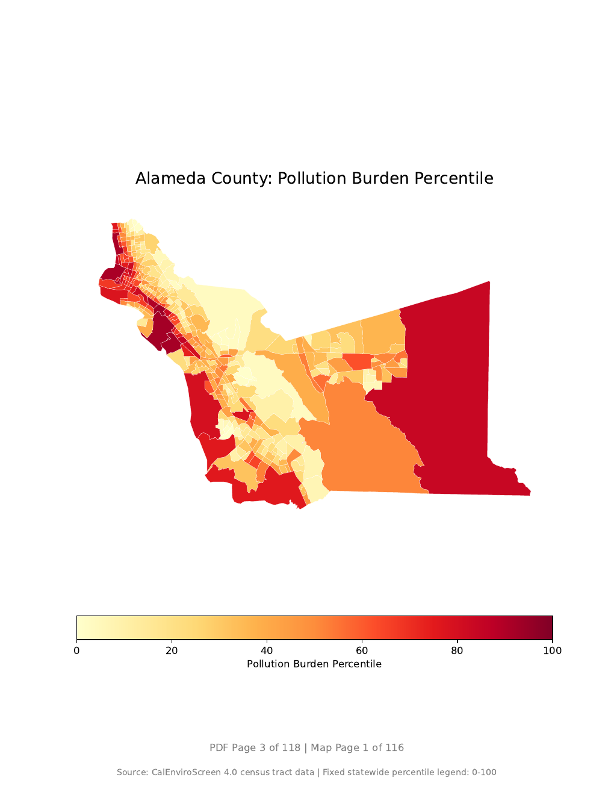

Unit 04: 지도 자동화 및 대량 생산 (Map Series & Automation)
PolBurdP(Pollution Burden Percentile)와 AsthmaP(Asthma Percentile)를 사용했습니다.
도구 숙련자 및 오퍼레이터 양성
ArcGIS 워크플로우는 레이아웃을 한 번 정교하게 만든 뒤, Spatial Map Series가 카운티 인덱스 레이어를 따라 자동으로 58페이지씩 찍어내도록 설정하는 과정입니다.
CalEnviroScreen 트랙 레이어와 카운티 경계 레이어를 올리고, 첫 번째 변수의 심볼을 0-100 percentile 고정 구간으로 설정합니다. 같은 범례가 모든 카운티 페이지에 유지되어야 합니다.
Layout view에서 Map Series를 켜고, 카운티 경계를 Index Layer로 지정합니다. 이 순간부터 카운티 하나가 PDF 한 페이지의 카메라 위치가 됩니다.
Map Series용 page name, page number with count, 고정 legend를 배치합니다. 첫 번째 변수 58장을 내보낸 뒤 두 번째 변수에도 같은 틀을 적용해 총 116개 지도 페이지를 만듭니다.
※ 오퍼레이터의 필수 관문: ArcGIS Pro에서 같은 레이아웃을 58개 카운티에 반복 적용하는 버튼 클릭 가이드
[1단계] 레이어와 심볼 준비 Map 뷰 ▶ CalEnviroScreen tract layer ▶ Symbology| Primary Symbology | Graduated Colors |
|---|---|
| Field | 첫 번째 변수: Pollution Burden Percentile |
| Classification | 0-100 percentile 기준을 전체 주에서 고정 |
| County Boundary | 캘리포니아 카운티 경계를 함께 추가 |
| Map Frame | 주제도가 들어갈 지도 창을 페이지 중앙에 배치 |
|---|---|
| Legend | 변수별 0-100 percentile 범례를 하단에 고정 |
| Scale/North Arrow | 필요 시 동일 위치에 고정 배치 |
| Index Layer | California Counties 선택 |
|---|---|
| Name Field | county name 필드 지정 |
| Sort Field | county name 필드 지정, 알파벳 순 정렬 |
| Map Frame | 방금 만든 지도 프레임 선택 |
| Extent Option | 각 county feature의 범위에 맞게 자동 이동 |
| Page Name | 제목 위치에 삽입. 예: Alameda County |
|---|---|
| Page Number with Count | 하단에 삽입. 예: Page 3 of 118 |
| Static Text | 변수명, 데이터 출처, CalEnviroScreen 4.0 설명은 고정 문구로 배치 |
| Pages | All 선택 |
|---|---|
| Output | 첫 번째 변수 PDF를 생성 |
| Repeat | 심볼 필드를 두 번째 변수로 바꾼 뒤 같은 방식으로 58페이지 생성 |
| Final Assembly | 표지, executive summary, 두 map series를 하나의 PDF로 결합 |
지식 창조자 및 GIS 엔지니어 양성
파이썬 방식은 ArcGIS의 Map Series 아이디어를 코드로 직접 흉내 냅니다. 카운티 목록을 하나씩 꺼내고, 해당 카운티의 트랙만 골라 지도에 칠한 뒤, PDF 인쇄기에 한 페이지씩 쌓아 118페이지 atlas를 완성합니다.
geopandas로 카운티 경계와 CalEnviroScreen 4.0 트랙 shapefile을 불러옵니다. 그다음 PolBurdP와 AsthmaP 두 변수를 atlas의 주제 지표로 고정합니다.
정렬된 58개 카운티 목록을 반복문으로 돌면서, 매번 ces_tracts['County'] == county_name 조건으로 해당 카운티의 센서스 트랙만 골라냅니다.
vmin=0, vmax=100으로 모든 지도 범례를 같은 0-100 percentile 척도에 묶습니다. 제목과 footer는 코드가 매 페이지마다 새로 찍어 넣습니다.
※ 지식 창조자의 무기: 실제 `unit04_automation_pipeline.py`가 하는 일을 한 줄씩 풀어 쓴 설명입니다. ArcGIS의 Map Series 기계를 파이썬으로 직접 만든다고 생각하면 됩니다.
[핵심 로직 1] 재료 창고 열기: 카운티와 CalEnviroScreen 데이터 불러오기CalEnviroScreen 4.0 기반 118페이지 자동 atlas 결과물
파이썬의 GeoPandas, Matplotlib, PdfPages를 활용해 표지 1페이지, executive summary 1페이지, 그리고 116개 county-variable 지도 페이지를 자동으로 생성했습니다.
ArcGIS Pro의 Map Series가 UI에서 수행하는 반복 작업을 코드로 다시 구현한 결과입니다.

Automated Atlas Preview: Alameda County Pollution Burden
PDF page 3 of 118 · Map page 1 of 116 · Fixed 0-100 percentile legend